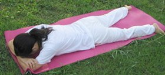
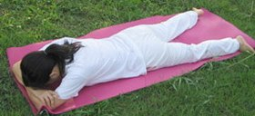

left-right symmetric
whole body in contact with ground, arms by side
https://en.wikipedia.org/wiki/Makarasana
child's pose

source: Yoga Journal
dolphin

source: Yoga Journal
bow

source: Yoga Journal
| Current pose: lay on stomach OR crocodile | Adjacent poses: table top | child's pose | dolphin | bow | |
|
Makarasana left-right symmetric whole body in contact with ground, arms by side https://en.wikipedia.org/wiki/Makarasana |
child's pose
dolphin
bow |